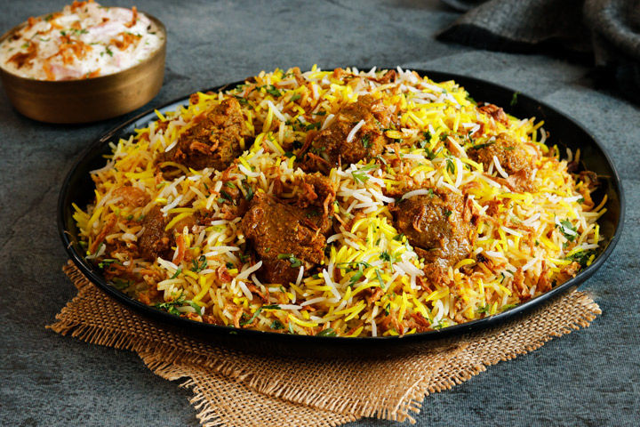

Hyderabadi chicken dum Biryani 255/- 2.6/5 (11,111) Aromatic rice and succulent meatcooked with complex flavours and slow-cooked to perfectionZafrani Mutton dum Biryani 289/- 4.1/5 (10,249) Aromatic rice and succulent Mutton cooked with complex Zafrani flavours and slow-cooked to perfectionFry piece Fish Biryani 310/- 3.2/5 (2,369) Aromatic rice and succulent fry piece Fish cooked with complex Masala flavours and slow-cooked to perfection
Chicken Fry Piece Biryani 345/- 4.0/5 (9,542) Mouth-watering biryani layered with complex flavours rice sauteed to perfection Special Mutton dum Biryani 489/- 3.8/5 (8590) Aromatic rice and succulent Mutton Served with Twelve Piece of mutton With Salan, raita, salad,\Panner & Veg Mixed Biryani 299/- 3.2/5 (1,422) Aromatic rice and succulent Paneer and veggies cooked with complex Masala flavours with salan, raita, salad
MAIN COURSE:-
Paneer Butter Masala 245/- 3.9/5 (8,443) [Paneer Butter Masala also known as Butter Paneer]is a Rich And Creamy Curry made with paneer, tomato, cashews and butterPaneer Tikka Masala 289/- 4.5/5 (8590) Unique Curry Recipe That Known For Its Tikka Sauce, Roasted flavours Comes From The Roasting Of PaneerMushroom Mixed Curry 349/- 3.2/5 (1,422) Unique Curry Recipe That Known For Its mushroom flavours, Roasted Comes From The Roasting Of mashroom and veggies
Chicken Tikka Masala 345/- 4.7/5 (9,573) A Unique Curry Recipe That Known For Its Tikka Sauce which is Rich And Creamy made with Chicken, tomato, spices and butterButter Chicken 289/- 4.5/5 (8004) Unique Curry Recipe That Known For Its butter Sauce,flavours Comes From The Roasting Of ChickenTelangana Chicken Curry 349/- 4.8/5 (10,422) Spicy Curry Recipe That Known For Its delicious flavours of masalas Comes From The slow cooked natu chicken.
STARTERS:-
Chicken 65 339/- 3.9/5 (1,573) Coated in batter and Deep-fried chicken chunks tossed with curry leaves Chicken Lollipop 289/- 4.2/5 (2484) Chicken Lollipop is Crispy Tosssed with rice flavoured sauceApollo Fish 379/- 3.5/5 (922) Boneless fried until crisy and tossed with rich flavoured Sauce.Loose Prawns 449/- 4.1/5 (573) Golden fried prawns servedWith hot garlic sauce.
DISCLAIMER:
All prices are set directly by restaurant.
All nutritional information is indicative, values are per serve as shared by the Restaurant and may vary depending on the portion size.
An average active adult requries 2000 kcal per day, calorie need may vary.
Dish details might be AI crafted for a better Experience.


 ,\
,\